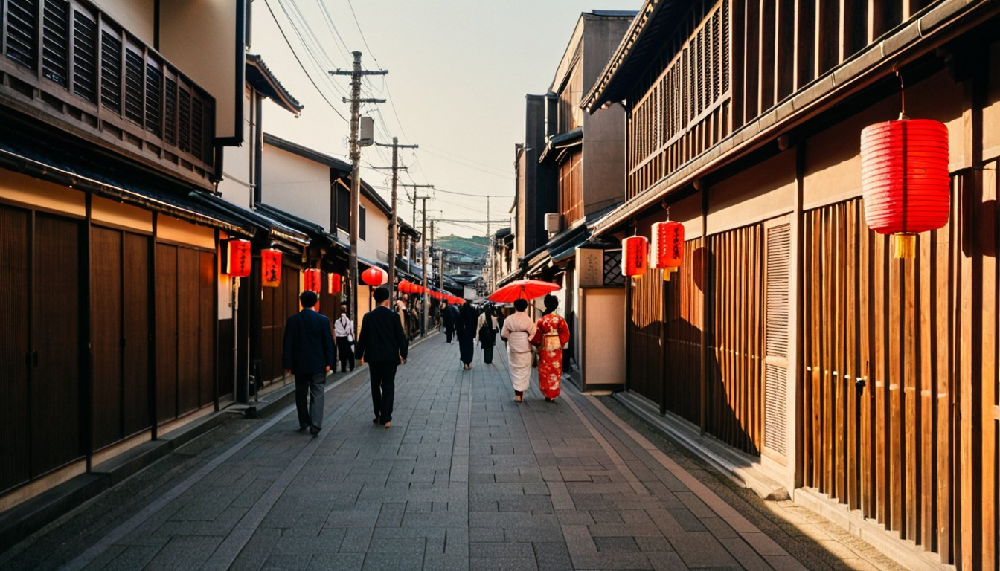
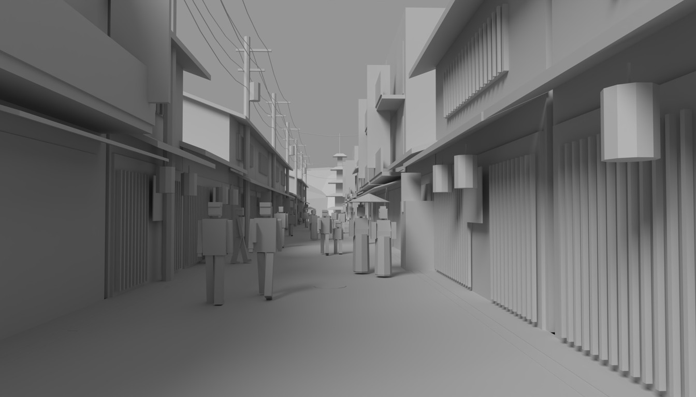
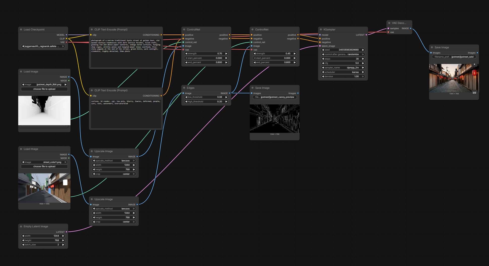
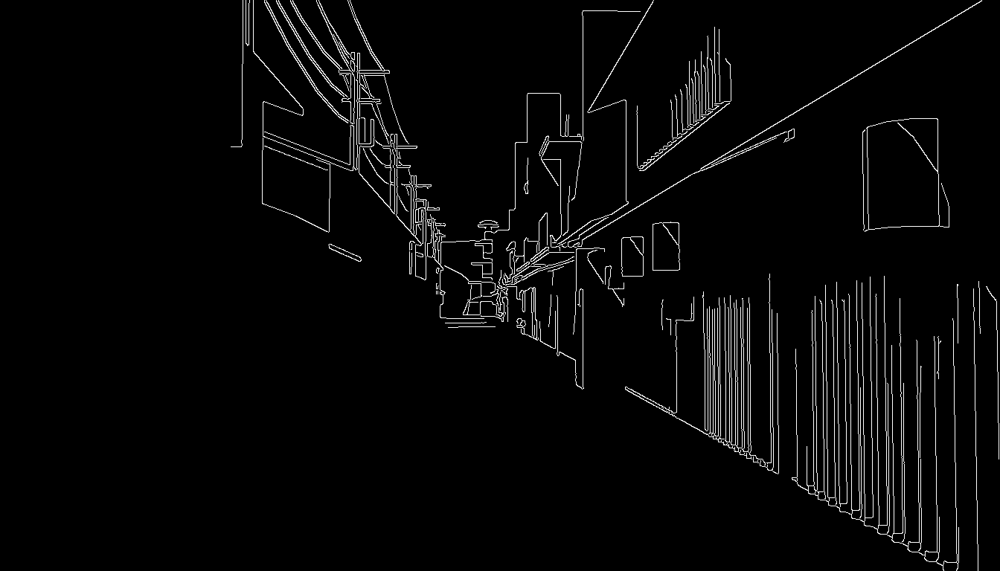
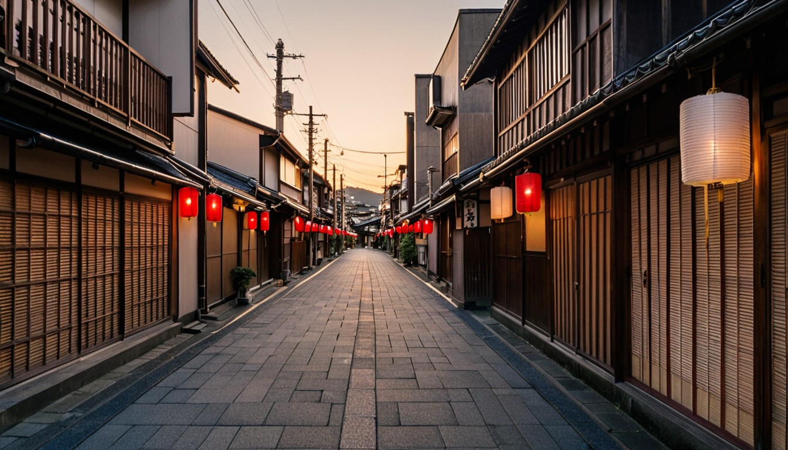
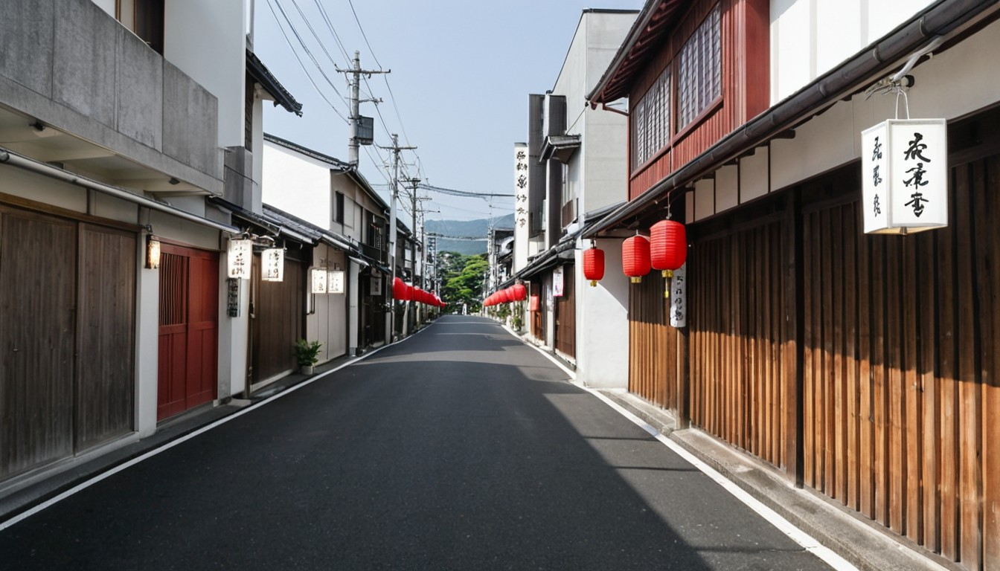

Inputs


ComfyUI


Earlier tests






A grey Blender render of a Japanese street, taken to a finished golden-hour image in ComfyUI. Depth and Canny edge ControlNets keep the result locked to the original camera, layout and people, while the prompt sets the lighting, materials and mood.





